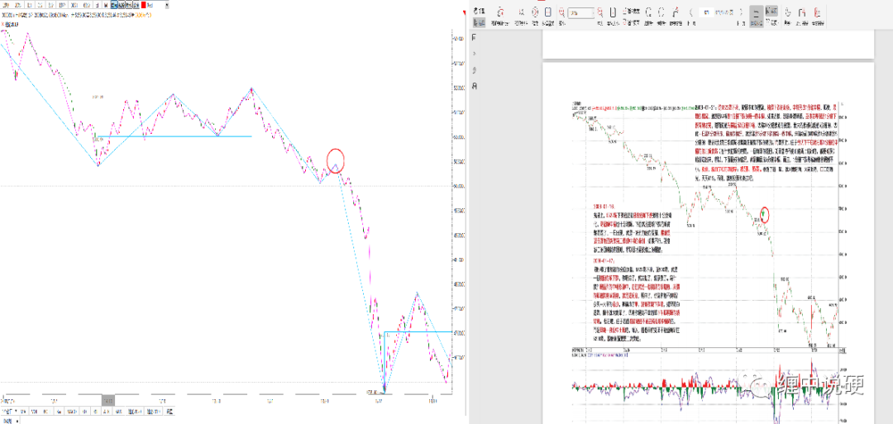
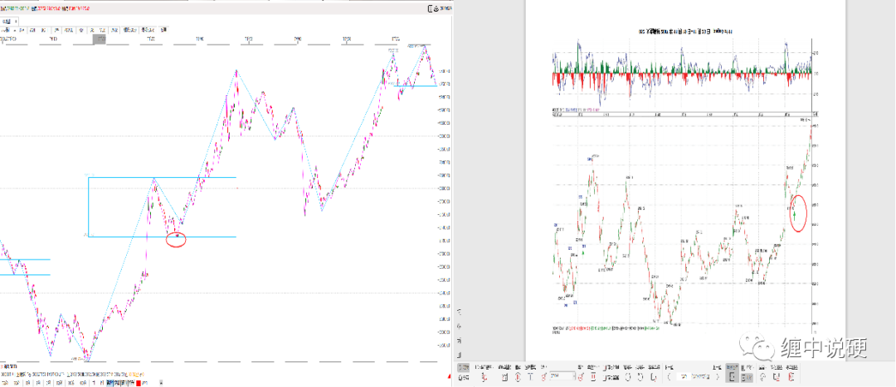
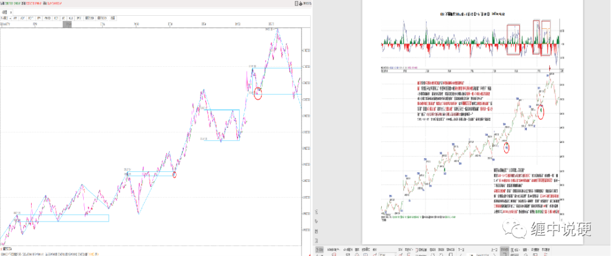

原文中第三类买卖点的判断



如何判断“背驰”？
首先定义一个概念，称为缠中说禅趋势力度：前一“吻”的结束与后一“吻”的开始，期间由短期均线与长期均线相交所形成的面积。在前后两个同向趋势中，当缠中说禅趋势力度比上一次缠中说禅趋势力度要弱，就形成“背驰”。
【缠论悟语】首先必须明确的是，所有上涨、下跌、盘整都建立在一定的周期图表上（匪注：级别真正的含义之一），例如在日线上的盘整，在 30 分钟线上可能就是上涨或下跌，因此，一定的图表是判断的基础，而图表的选择（匪注：初始最小级别图表），与上面所说交易系统的选择是一致的，相关于你的资金、性格、操作风格等。
1、上涨：最近一个高点比前一高点高，且最近一个低点比前一低点高。（匪注：什么是高点呢？均线交合前的高点是为高点）
2、下跌：最近一个高点比前一高点低，且最近一个低点比前一低点低。（匪注：什么是低点呢？均线交合前的低点是为低点）
3、盘整：①最近一个高点比前一高点高，且最近一个低点比前一低点低；②或者最近一个高点比前一高点低，且最近一个低点比前一低点高。